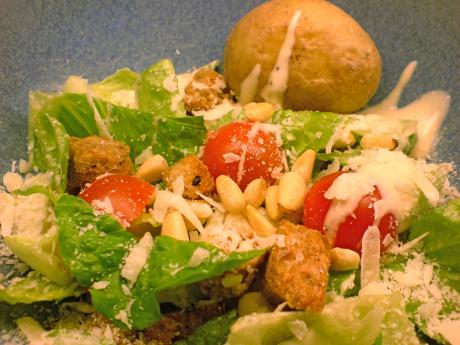

Caesarsallad - enkelt och värt

I flera dagar har suget efter caesarsallad byggts upp i vår gom, idag kom äntligen tillfredsställelsen.
Hemmagjort är ju alltid bättre, eller vad sägs om att slippa kycklingen, fusk-parmesan-pulvret, ansjovisen i dressingen eller - det värsta av allt - den äppelrökta baconen. Dessutom får man en bra ursäkt att köpa hem en riktigt fin och dyr, men äkta, parmesanost.
Börja med att göra egna brödkrutonger, ta rostbrödet du har hemma bara, allt går bra som inte är för grovt. Tärna och grilla på en plåt högt upp i ugnen, på 175°C, tills de är lagom krispiga. Den ambitiöse (som vi alltså) gör en kryddblandning av olivolja, örter, vitlök som blandas in i krutongerna innan grillningen. Använd bara lite olja, brödet får inte bli för vått.
Skölj och skär ner romansallad, isbergssallad eller något annat krispigt blad. Ta gärna med några halvor körsbärstomater också. För att göra salladen lite matigare kan man koka färskpotatis och servera i en skål bredvid. Testa också att variera salladen med rårivna morötter eller torrostade pinjenötter, solrosfrön eller nåt annat gott.
Servera i djupa tallrikar fyllda till bredden med grönsaker. Strö över krutonger och nötter eller frön, placera en potatis vid kanten och ladda upp med rejäla skopor caesardressing som du lätt blandar ihop på egen hand, men ännu lättare köper färdig.
Överst, på toppen av ditt salladsberg kommer det bästa av allt, färskriven parmesan!
Hemligheten ligger i att salladen blandas väl, så alla olika smaker når din gom på samma gång. Sen är det bara att smaska i sig!
/Pontus & Helga
Kommentarer
Viktor
mmm!! låter riktigt smaskigt! :) bara förstklassiga ingredienser! det gillas!
Skriv ny kommentar